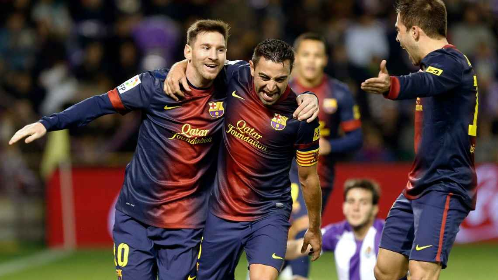
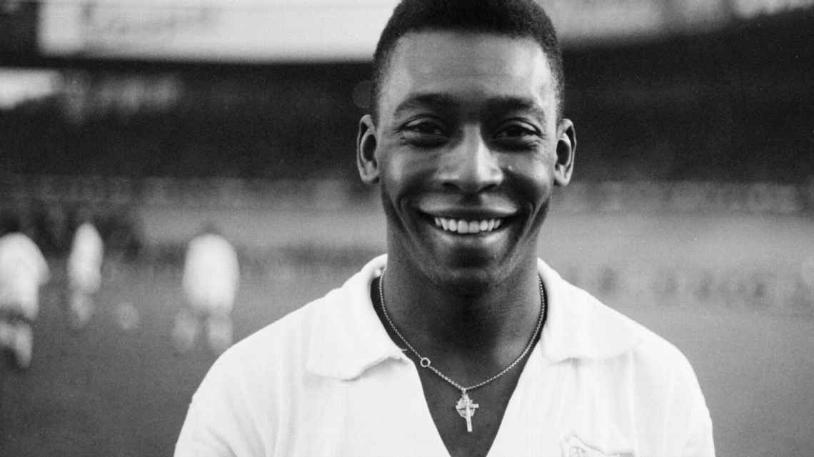

Lionel Messi: O jogador que mais marcou gols em um ano
Em 22 de dezembro de 2012, Lionel Messi completou mais uma de suas marcas incríveis pelo Barcelona. Naquele ano, ele marcou incríveis 91 gols, um recorde absoluto na história do futebol.
Para se ter uma ideia do tamanho da façanha, o argentino fez, sozinho, mais gols que vários gigantes da Europa durante o ano de 2012, superando o total de gols de equipes como Manchester United (85), PSG (86), e Chelsea (87).

Pelé: O único jogador a conquistar três Copas do Mundo
Pelé é reconhecido mundialmente como o Rei do Futebol, e um de seus feitos mais icônicos é ser o único atleta a ter vencido três Copas do Mundo como jogador. Ele alcançou essa glória com a seleção brasileira em 1958, 1962 e 1970.
Em 1958, com apenas 17 anos, foi a estrela do primeiro título mundial do Brasil. Em 1970, no México, liderou uma das maiores seleções de todos os tempos. Esse recorde permanece inigualável e solidifica seu lugar como uma lenda eterna do esporte.

Cristiano Ronaldo: O maior artilheiro da Champions League
Cristiano Ronaldo detém o recorde de maior artilheiro da história da Liga dos Campeões da UEFA. O craque português marcou mais de 140 gols na competição, uma marca que demonstra sua consistência e poder de decisão no mais alto nível do futebol de clubes.
Além de ser o maior goleador, ele conquistou o torneio cinco vezes, sendo protagonista em todas as conquistas. Sua mentalidade vencedora e sua incrível capacidade de marcar gols em momentos cruciais fizeram dele um verdadeiro sinônimo da Champions League.